料理
料理
有些菜留下來，成為典藏。有些菜只屬於一個季節，寫成一個章節。
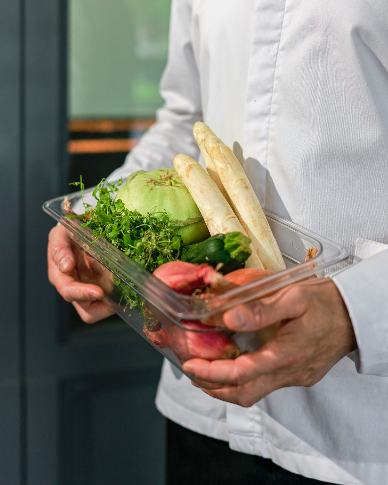
Chapitre・2026 春夏
風味博物誌
這一季，古俊基是風味的採集者。
三條線索貫穿整套菜單：大地風物、植物辛香、時間沉澱。
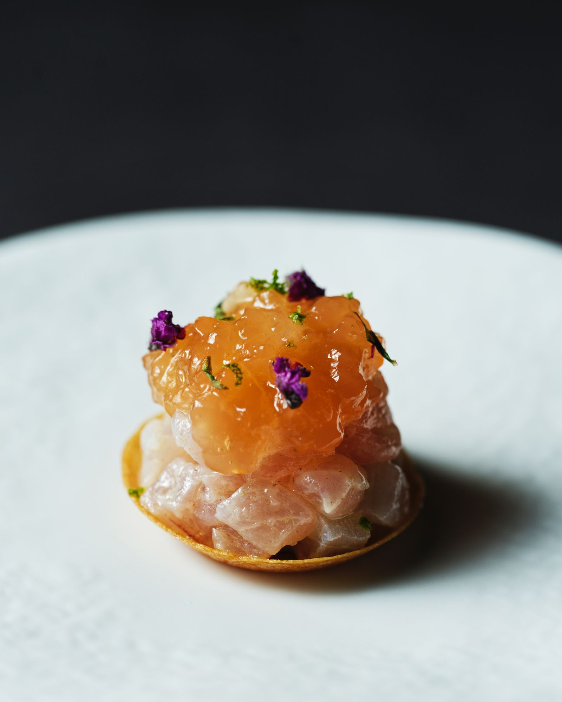
I
竹筴魚／卡菲爾檸檬／香菜
Shima aji / Kaffir lime / Coriander
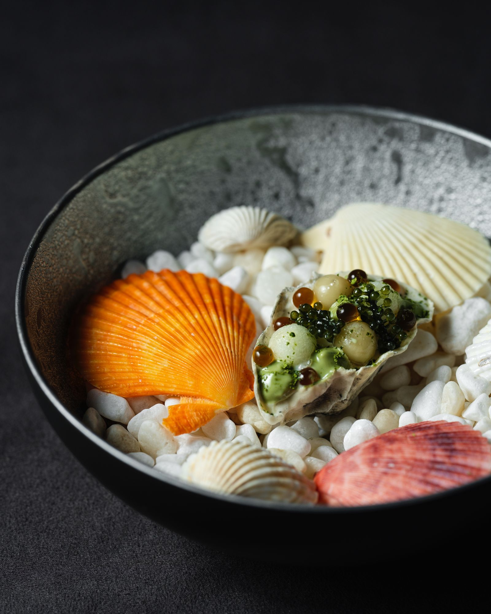
II
生蠔／微藻物／茴香
Oyster / Plankton / Fennel
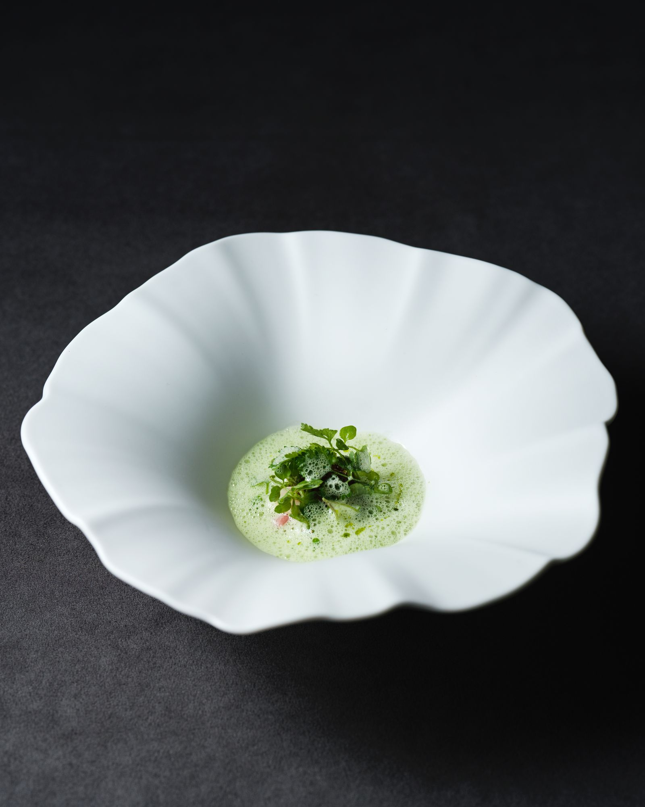
III
象拔蚌／魚子醬／墨西哥辣椒
Geoduck / Caviar / Jalapeño
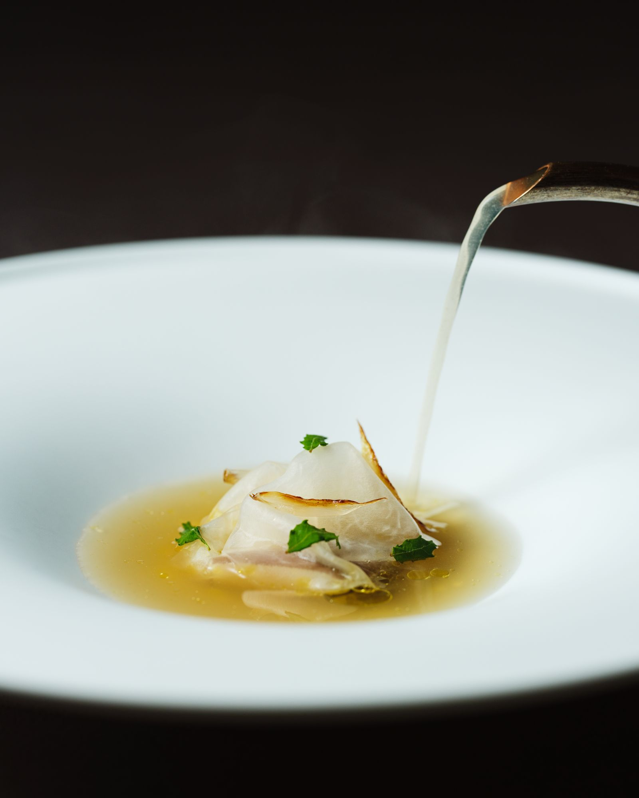
IV
鴨肝／鮑魚／昆布
Foie gras / Abalone / Kombu
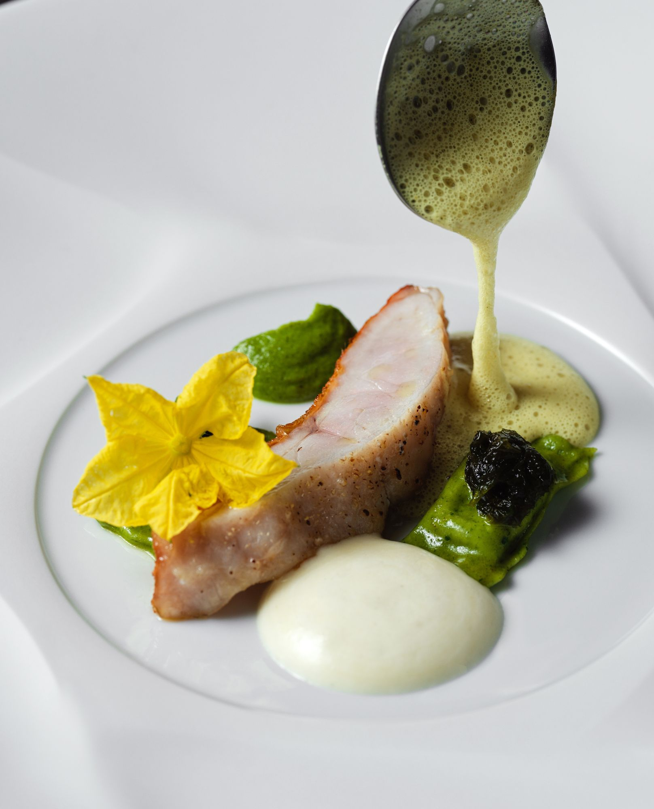
V
市場鮮魚／布列塔尼香料／櫛瓜
Market fish / Breton spice / Zucchini
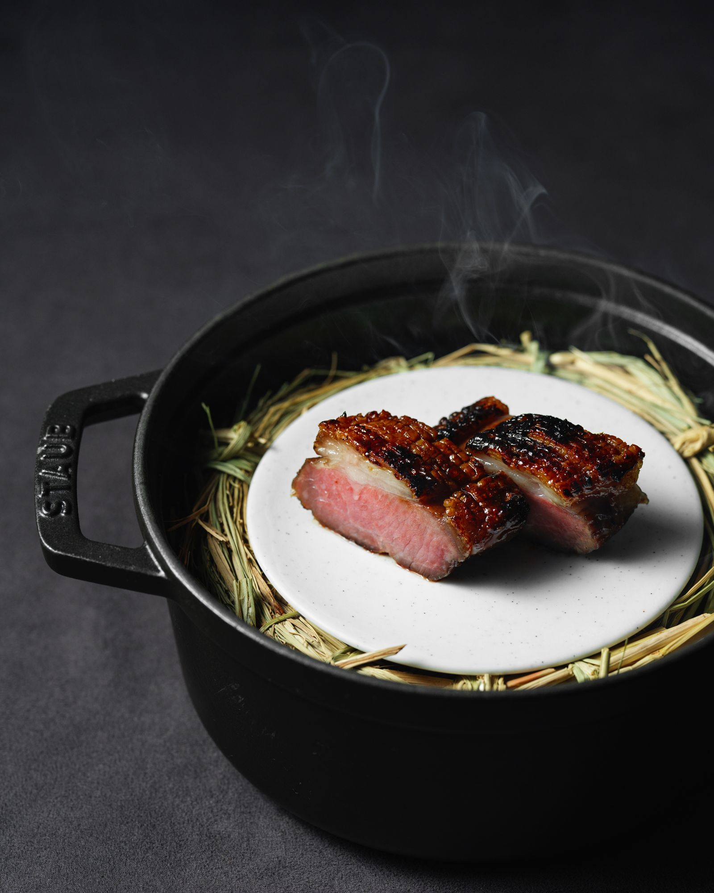
VI
羊鞍／辣根／手指檸檬
Lamb saddle / Horseradish / Finger lime
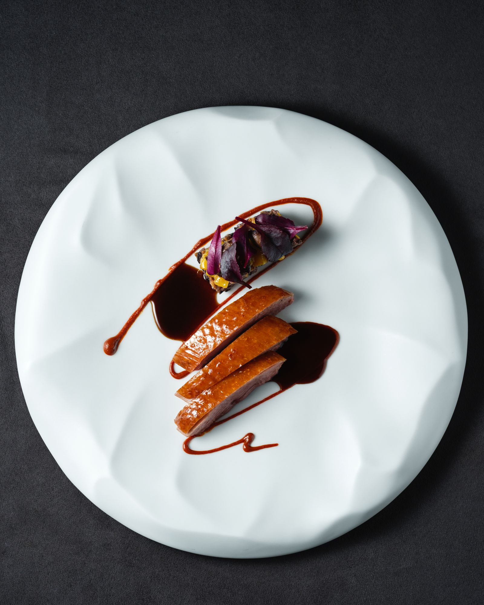
VII
彰化芳苑玫瑰鴨／芒果／野米
Duck / Mango / Wild rice
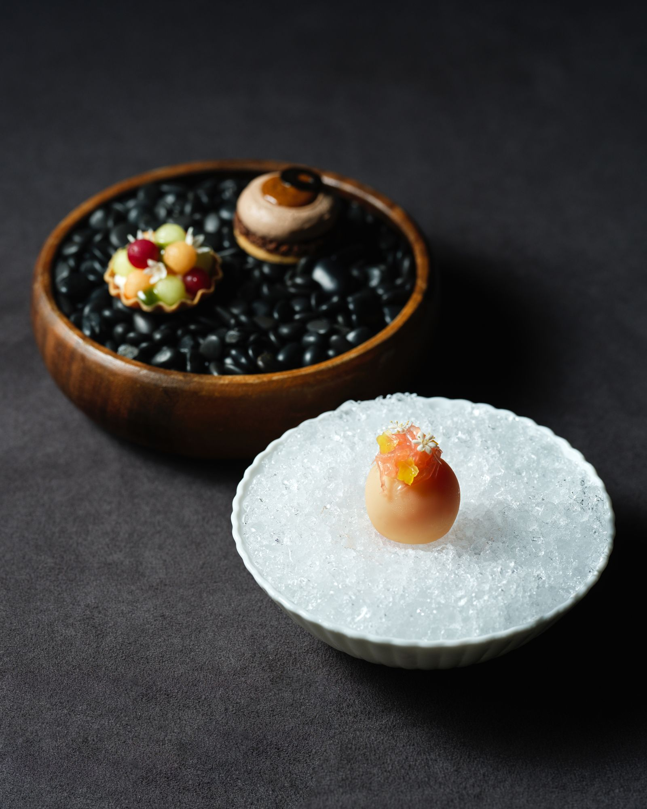
VIII
茶點
Mignardises
典藏
有些菜，留下來
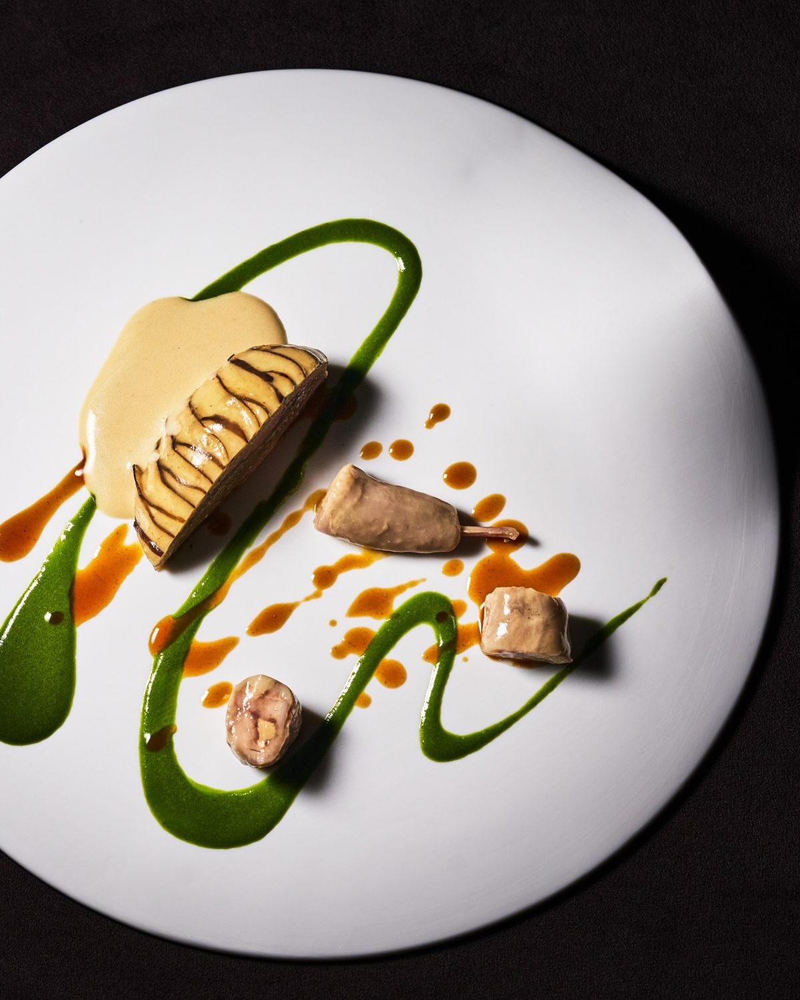
I
鵪鶉／羊肚菌／黃酒
Quail / Morel / Vin jaune
嘉義溪口的鵪鶉。腿包鴨肝、以法國黃酒燉煮；胸肉填羊肚菌與雞肝慕斯。古俊基的經典。
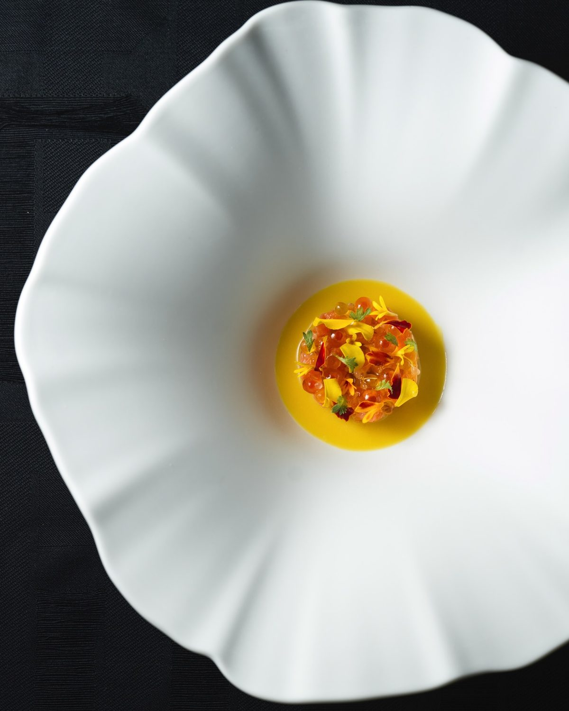
II
帝王鮭／百香果／燈籠果
King salmon / Passion fruit / Gooseberry
紐西蘭庫克山的冰河帝王鮭，柑橘醃製，配台灣百香果與燈籠果汁、金蓮花油。
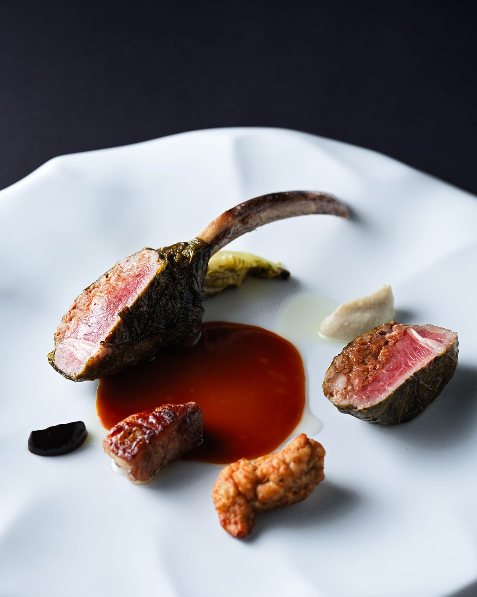
III
羊肋／哈里薩／胡椒葉
Lamb / Harissa / Pepper leaf
紐西蘭高地的小羔羊肋排，中東哈里薩醬，外層包台灣原種胡椒葉輕煎。
產地
從哪裡來
宜蘭大溪漁港・甜蝦
嘉義溪口・鵪鶉
金門・野生竹午魚
屏東・蓮霧
台灣・金鑽鳳梨、愛文芒果
紐西蘭庫克山・帝王鮭
菜單
晚餐・週二至週六・18:00 – 22:30・最後入座 19:30・八道或十道菜
午餐・週五、週六・11:30 – 15:00・最後入座 12:15
侍酒師佐餐搭配，亦有無酒精搭配